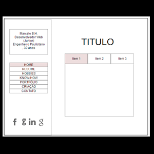

Briefing: Em um arquivo simples de word o autor definiu o público-alvo e quais seriam os assuntos abordados neste portfólio.
Brainstorm: Após definir qual seria o público-alvo e os assuntos principais, em uma folha sulfite, o autor começou a atrelar quais seriam os possíveis assuntos chaves para o desenvolvimento das seções do site e foi adicionando conteúdo dentro de cada assunto de acordo com informações levantadas no seu curriculum e nos seus sites de relacionamento. Após levantar todo o conteúdo de informações do site, ele passou a analisar quais poderiam ser as opções de layout, até chegar a ideia refinada de usar o estilo visual similar ao da turne de 2015 do álbum “The Wall” de Roger Waters.
Wire-frames: O trabalho passou por dois estágios de wire-frame, na primeira fase foi desenvolvido um layout de páginas com estilos diferentes entre elas (o autor criou esboços feitos manualmente, sem qualidade suficiente para serem apresentados para o leitor), já no segundo wire-frame que foi refinado do primeiro, o autor passou a adotar um layout básico para montar todas as páginas do portfólio, contanto apenas com o menu lateral e um box principal aonde estaria os conteúdos das páginas.
Público alvo: Professor Ramon (o qual também utiliza elementos do álbum “The Wall” no seu site pessoal), demais professores que participem no dia da apresentação do Projeto Integrador e alunos que por ventura estejam participando desta mesma apresentação;
Site de acordo com as expectativas: Na aba wire-frame é possível verificar que existiram duas versões do site, na primeira, o site apresentava um layout que não utilizava tantos recursos do Bootstrap, bem como possuía padrões de disposição das informações variando de página para página, já na segunda versão com um maior conhecimento dos recursos deste frame-work, o autor optou por adotar um visual similar para todas as páginas utilizando o recurso “Togglable tabs” para aninhar conteúdos dentro do box principal das páginas;
Arquitetura da informação: As diferentes páginas são divididas em de maneira ambígua em assuntos específicos sendo subdivididos em categorias chaves de acordo com o tema que abordam.
Web-design: O design do site buscou facilitar a navegação do usuário mantendo o menu principal, bem como as informações “chave” do autor e os links para mídias sociais fixados no canto esquerdo de todas as páginas. O conteúdo principal das páginas se encontra logo ao lado deste menu, com letras grandes para os títulos e sub-menus, utilizando um contraste de cores simples permitindo um maior conforto ao usuário durante a navegação e leitura dos conteúdos.
Alinhamento – O alinhamento do texto e das figuras foi feito sempre de modo a centralizar o conteúdo ou alinhar a esquerda os mesmos. Os textos usaram o alinhamento “justificado” de acordo com as boas práticas de design;
Proximidade – Foi utilizado um espaçamento coerente entre todos os elementos das páginas mesmo quando ocorrem mudanças nas dimensões da tela;
Repetição – Evitou-se ao máximo a repetição indevida de elementos ou padrões nas diferentes páginas. Apenas neste trecho ocorre quebra desta regra uma vez que as informações estão sendo apresentadas como se fosse um “relatório”;
Contraste – Evitou-se constrastes “chocantes” ao usuário, mantendo um padrão de contraste simples entre o vermelho e o preto ou o branco e entre o branco, o preto e o cinza.
Elementos gráficos: O javascript typed é usado apenas na primeira página como elemento de destaque, porém ele não torna o carregamento da página demorada; Os elementos que utilizam font-awesome servem como decoração dos menus e o seu pequeno delay ocorre pois foi definido que os scripts deveriam ser o último elemento apresentado dentro da tag body;
Os elementos tipo “fade” presentes nas togglable tabs e na passagem das figuras da página “hobby” não interferem no tempo de carregamento, servindo como efeitos visuais simples;
Todas as imagens utilizadas no site foram previamente salvas no formato “para web”, visando acelerar o carregamento das mesmas;
Não foi utilizado o efeito de “maximixar conteúdo de imagens” uma vez que o conteúdo principal nas páginas seria o texto;
Todas as imagens contam com redimensionamento proporcional de acordo com a responsividade da página.
Escrita: Exceto nesta seção do site que é mais extensa, foram utilizados parágrafos sucintos, apresentando apenas uma idéia por trecho;
Todos os elementos passaram pelo corretor ortográfico do programa Office Word antes de serem adicionados ao html;
Acessibilidade e usabilidade: Foram utilizados atributos “alt” em todas as figuras do portfólio respeitando a preocupação com a acessibilidade para deficientes visuais; tanto no menu lateral, quanto no trecho do conteúdo principal, foram utilizados itens obtidos no site “font-awesome” que disponibiliza figuras no formato de texto, com isso, deficientes podem facilmente editar o tamanho destes itens em conjunto com as demais letras do conteúdo; os títulos principais e os itens do menu buscam se destacar em relação ao resto do conteúdo para facilitar a identificação das informações chaves de cada seção; a estrutura html busca seguir um fluxo coerente do conteúdo, facilitando assim a compreensão das pessoas que usam leitores de tela e o “tab” para navegação;
Responsividade: O site se encontra responsivo para os principais tamanhos de telas do mercado, para dimensões menores do que uma tela padrão de celular, o layout passa a não responder mais. Para alcançar esse objetivo, foram utilizados os recursos de colunas do bootstrap para o trecho de conteúdo principal das páginas, o sistema de menu dos trechos internos também são responsivos pois contaram com o uso de classes específicas deste frame-work e para o menu lateral foi utilizada média query desenvolvida pelo autor.
Elementos de forma semântica:Foram utilizadas tags semanticas sempre que possível no hml, usando divs normalmente para atrelar classes próprias do Bootstrap;
CSS: Todas as páginas fazem uso do CSS externo, bem como Javascripts e bibliotecas CSS (incluindo Bootstrap) em arquivos externos ou por meio de CDN.
URLs: foram utilizadas urls curtas, com linguagem simples e em letras minúsculas.
O visitante deste portfólio pode facilmente notar que todas as páginas buscam seguir um mesmo padrão de cores e de estilos de fontes principais.
Conforme pode ser verificado no vídeo apresentado logo acima, o autor deste site buscou inspiração na identidade visual adotada pelo cantor Roger Waters na apresentação da turnê do álbum “The Wall” que ocorreu em meados de 2015, passando inclusive pelo Brasil. No vídeo é possível assistir alguma cenas do dvd desta turnê.
Neste álbum, (apesar dele ter sido lançado ainda quando o cantor participava da banda internacional Pink Floyd) Roger conta a historia de um jovem rapaz que perdeu seu pai durante uma guerra e que acaba encontrando na música uma válvula de escape para os seus dogmas….. na verdade essa suposta história pode ser considerada como uma “biografia” do próprio cantor.
Abusando das cores preto, branco e vermelho, o autor busca seguir o mesmo estilo adotado pelas imagens apresentadas nesta turnê.
O autor também cogitou modificar o padrão de cores de todas as imagens apresentadas no site para respeitarem essa palheta de três cores, no entanto, ele considerou que esta mudança iria prejudicar a experiência do usuário.